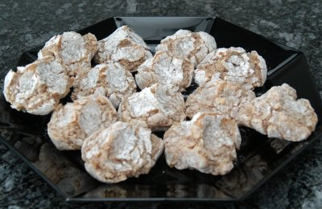

| Zutaten: | |
| 200 g | gemahlene Mandeln (ohne Schalen) |
| 200 g | Zucker |
| 2 | Eiweiss |
| 20 g | Amaretto |
| 2-3 Tropfen | Bittermandelaroma |
| 1 Prise | Salz |
| 100 g | Puderzucker |
Dauer: 9 Stunden!
Eiweiss steif schlagen. Alle Zutaten miteinander mischen, mit einer Folie zudecken.
Etwa eine Stunde im Kühlschrank ruhen lassen.
Den Puderzucker in eine Schüssel geben. Die Masse aus dem Kühlschrank nehmen, mit einem Löffel baumnussgrosse Nocken abstechen und im Puderzucker wenden. Die Nocken sollen nicht mehr an den Händen kleben. Die noch ungeformten Amaretti-Häufchen auf ein Backblech geben.
Etwa sechs bis acht Stunden an einem trockenen, kühlen Ort ruhen lassen.
Den Backofen auf 200°C heizen.
Kurz vor dem Backen die Amaretti mit Daumen, Zeige- und Mittelfinger in die typische Form drücken.
Das Blech nun in den heissen Ofen schieben und backen, bis die Amaretti hellbraun sind. Ca. 10 Minuten aber genau kontrollieren!
Irgend so ein Junk Mail Zeug das im Dezember 2007 im Briefkasten lag.
Ich bin mir nicht sicher was die typische Amaretti Form ist aber herausgekommen sind sie sensationell! RE, 21.4.2008
Seither hatte ich weniger Glück mit den Amaretti. Die nächste Ladung verbrannte weil sie im Ofen nicht gut überwacht wurden. Am 25.12.2010 sind sie mir zerschmolzen! Vielleicht soll man sie oben im Ofen hinein tun damit sie einfach aussen leicht caramelisieren? Meine waren auf der unteren Seite der Mitte. Oder lag es daran, dass sie im kühlen Estrich nicht sauber trockneten? RE
Am 8.3.2020 gelangen sie wieder hervorragend. RE
@LINKBACK_TAG@ @WAKELOCK@